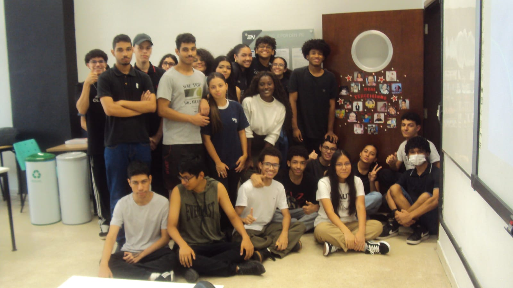

Objetivo
Apresentamos este E-Book exclusivo, desenvolvido com o propósito de documentar e compartilhar uma coletânea de estudos aprofundados sobre a Etec Sebrae. Ao longo de um ano de dedicação acadêmica e investigativa, foram realizadas diversas pesquisas que exploram aspectos relevantes da instituição, suas práticas pedagógicas, projetos, impacto educacional e muito mais.
Integrantes

Alunos
- Anna Júlia Messias Morais Jaime
- Beatriz Silva Domingos
- Crystian da Silva Freire
- Evelin de Fátima Fernandes Silva
- Felipe Kenji Suyama Sei
- Fernanda da Silva Viana
- Gabriela Ferreira Dias de Sousa
- Henrique Elis Pretel Silva
- Isabella Toledo Antunes da Silva
- José Humberto Soares Filho
- Kauê Davi Rocha de Jesus
- Lorena Ribeiro Navarro
- Luiz Gabriel da Silva Costa
- Maria Eduarda Ribeiro dos Santos
- Maria Klara dos Santos Batista
- Mateus Lacerda Campos
- Matheus de Assis Vitor
- Matheus Pereira Lima
- Maycon Pereira Lima
- Miguel Reis da Silva Mello
- Rafael Santos Silva
- Raíssa Kinoshita Maluf
- Thaís Luana Cáceres Quenta
- Vitória Borges Alcantara da Silva
- Yassir de Melo Suleiman
- Ycaro Gustavo de Souza e Silva
- Yhadir Dilan Mamani Espinoza
Professora Orientadora
- Ana Lúcia Machado da Silva
Responsável Centro de Memória Sebrae
- Sara L. S. Fernandes
Bibliotecárias da Biblioteca Sebrae
- Micheline dos Santos Ferreira
- Corina Comizão
Coordenadora do Ensino Médio com Itinerário Formativo
- Marly Aparecida Peres
Auxiliar Técnico
- Arthur Jacintho de Oliveira Santos